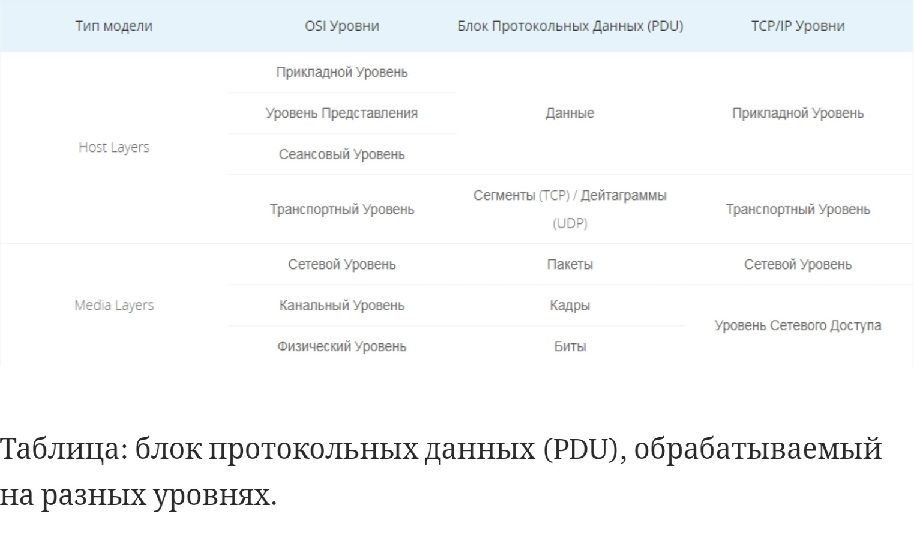

Лектор Мамойленко Сергей Николаевич
04.02.2020 7 лаб на автомат вовремя, курсач, экзамен, все задания в эиосе. Сдавать всё вовремя. Можно напарника из другой группы.
22.02.2020 лекция: физический уровень. Линия передачи данных. DCE data circle environment DTE data terminal environment. Модем - модуляция/демодуляция. Посещаемость в течение первых 30 минут отмечается. В том числе по СУББОТАМ. Бод - бит/сек. Симплекс - передача только в одну сторону. Разделяемый Half-duplex источник и приемник по очереди меняются местами. Двунаправленный full-duplex - одновременно передается и туда и сюда. Два кусочка кварца невозможно на практике сделать с одной частотой (рано или поздно они разойдутся, даже если были запущены одновременно). Выход например в том чтобы поставить один кварцевый источник. Но это сложно. Проще синхронизировать оба устройства приема и передачи после каждой передачи кадра. Циклический избыточный код(CRC).
18.02.2020 был на практике, но в эиос зашёл уже после половины пары. Система не разрешила нажимать кнопку.
08.02.2020 мы как бы делаем сеть для предприятия. Потом предоставляем услуги по предоставлению телевидения, либо телефония.(курсач наверное). Курс абсолютно практический, но теория тоже будет. Все взаимодействие через эиос. Курсач сдается Крамаренко до 31 мая. Должна быть реально работающая сеть эмулированная. Отметка на практике: прочитать лекцию на эиосе и т.п.
Баллы: на автоматы: 3 120 баллов, на 4 6 лаб (без 7) и курсач на 4; просто так ставится 5 за сертификат от вендора.(элтекс, международные и т.п.).(там сделать надо в 5 раз больше, чем по программе). Везде д.б. пропускные баллы для автомата. В эиосе можно общаться с преподавателем.
Предпосылки создания сетей эвм и телекоммуникаций. Свет самый быстрый.
Придумали пакетную передачу данных. Пакетики могли быть для разных устройств.
Блок(пакет) называется кадром.
Если нам предоставят OSI с внешним миром может не уметь общаться.
Tcp подтверждает, гарантирует? доставку
Udp не подтверждает получение, только вещает
Чтобы перейти в привилегированный режим ROUTER>enable(без точки как в методичке)
11.02.2020 был на практическом занятии. Сдал первую лабу, но система не зафиксировала меня.
DHCP — сетевой протокол, позволяющий сетевым устройствам автоматически получать IP-адрес и другие параметры, необходимые для работы в сети TCP/IP. Данный протокол работает по модели «клиент-сервер».
Сначала айпишники проставить, потом адрес сети.
Чтобы не было оверлапа надо указывать маску 255.255.255.0
Как работает коммутатор ethernet: алгоритм обратного обучения: принимая допустим на порт №3 кадр, видит в нём мак адрес как отправителя, так и получателя. Адрес отправителя естетсвенно приписывается порту №3 и в итоге хранится в таблице. Так будет продолжаться, пока коммутатор на запишет информацию обо всех компьютерах сети(подключенных к его портам). Коммутатор - это по сути прозрачный мост, с большим количеством портов, т.к. он не заметен для сетевых устройств и не требует настройки.
Допустим таблица заполнена. Получая кадры, он смотрит мак адреса своей таблицы и сравнивает их с адресом получаетля. Если находит совпадение, то шлёт кадр на порт с совпавшим мак адресом. Если пришедшего мак адреса нет в таблице, то кадр шлётся на все порты. Заголовок, хранящий мак адрес - это заголовок канального уровня. В классическом ethernet все компьютеры подключены к концентратору(разделяемой среде) это топология звезда (физическая) однако логическая топология - общая шина . Современный ethernet - тоже звезда, но логическая топология - полносвязная.
Сервис - описывает какие функции реализует уровень(например уровень может организовывать гарантированную доставку данных от одного приложения к другому, или поиск маршрута в большой составной сети).
Интерфейс - набор примитивных операций, которые нижний уровень предоставляет верхнему.
Протокол - правила и соглашения, используемые для связи уровня N одного компьютера с уровнем N другого компьютера.(как уровень это делает)
Интерфейс: реальное общение внутри компьютера. Уровень N вызывает функции уровня N-1 . Например программист создаёт сокет и записывает в него данные.(как получить доступ к сервису уровня)
Пртокол: виртуальное общение между компьютерами. Реально соединяются только уровни, работающие с физической средой. Взаимодействие через заголовки протокола соответствующего уровня.
Архитектура сети: Набор уровней и протоколов сети. Интерфейсы в архитектуру не входят, т.к. могут быть разными на разных программно-аппаратных платформах.
Стек протоколов: Иерархически организованный набор протоколов, достаточный для организации взаимодействия по сети.
Модель ISO OSI включает 7 уровней, но не включает протоколы. Хорошая теоретическая проработка. На практике не используется.
Модель TCP/IP - фактический стандарт на основе популярного стека протоколов TCP/IP. Содержит 4 уровня. Протоколы TCP/IP широко используются на практике. Основа Интернет.
Инкапсуляция - включение сообщения вышестоящего уровня в сообщение нижестоящего уровня. Сообщение: заголовок + данные + концевик.
Например с 3-го уровня данные передаются на второй, при этом второй уровень понимает, что оно слишком большое для передачи по сети, поэтому разбивает его на две части, снабжая их заголовками. Дальше сообщения поступают на первый уровень, который добавляет свой заголовок и(необязательно) концевик(может потребоваться, т.к. 1-й уровень работает со средой и там может понадобиться коцевик. Данные переданы на 1-й уровень узла получателя. Здесь заголовок и концевик 1-го уровня удаляются. На втором уровне, соответственно удаляются заголовки 2-го уровня, два сообщения объединяются в одно и передаётся на 3-й уровень. Всё это называется декомпозицией на уровни. Каждый уровень выполняет одну или несколько чётко определённых функций. Уровень предоставляет сервис верхнему уровню.
Модель Open System Interconnection:
Задача физ. уровня: представить биты информации в виде сигналов, передаваемых по среде. Не вникает в смысл передаваемой информации. Единица: бит. Устройство: концентратор
Канальный уровень передаёт уже не отдельные биты, а целые сообщения. Определяет начало, конец сообщения в потоке бит. Обнаруживает и исправляет ошибки. В широквещательной сети: управляет доступом к разделяемой среде передачи данных, выполняет физическую адресацию. Единица: кадр. Устройство: Коммутатор, точка доступа.
Сетевой. Задачи: Создание составной сети, согласование различий в сетях. Адресация(сетевые или глобальные адреса). Определение маршрута пересылки пакетов в составной сети(маршрутизация). Единица: пакет. Устройство: маршрутизатор.
Транспортный. Обеспечивает передачу данных между процессами на хостах. Управляет надёжностью: может предоставлять надёжность выше, чем у сети. Наиболее популярный сервис - защищённый от ошибок канал с гарантированным порядком следования сообщений. Сквозной уровень: Сообщения доставляются от источника адресату(от процесса отправителя процессу получателя). Предыдущие уровни используют принцип звеньев цепи. Он независимый, потому что происходит изоляция от сетевого оборудования. Единица: Сегмент/дейтаграмма
Сеансовый: позволяет устанавливать сеансы связи: Управление диалогом(очерёдность передачи сообщений). Управление маркерами(предотвращение одновременного выполнения критичной операции). Синхронизация(метки в сообщениях для возобновления передачи в случае сбоя). Единица здесь и далее: сообщение
Уровень представления: обеспечивает согласование синтаксиса и семантики(смысла) передаваемых данных(форматы представления символов; форматы чисел). Шифрование и дешифрование. Пример: Transport Layer Security (TLS)/ Secure Sockets Layer (SSL)
Прикладной уровень: набор приложений, полезных пользователям: Гипертекстовые Web-страницы, Социальные сети, Видео и аудио связь, электронаая почта, доступ к разделяемым файлам и др.

Модель TCP/IP:
Прикладной: HTTP, SMTP, DNS, FTP
Транспортный: TCP, UDP
Интернет(сетевой): IP - основной, ICMP, ARP, DHCP - вспомогательные
Сетевых интерфейсов: для ethernet, wifi, DSL, etc(эти технологии формально не входят в стек TCP/IP)
Та же модель TCP/IP по версии Таненбаума:
Прикладной
Транспортный
Сетевой
Канальный: ethernet, wifi
Физический
В протоколах HDLC & PPP добавляются биты 01111110 в начало и конец кадра. Здесь 6 единиц подряд. Для того, чтобы решить проблему путаницы в данные после каждых 5 последовательных единиц добавляется ноль.
Преамбула(классический ethernet перед началом каждого кадра): длина 8 байт. Первые 7 байт: 10101010. Последний байт: 10101011(ограничитель начала кадра).
Передача неиспользуемых символов избыточного кода(Fast Ethernet) Начало кадра - пара символы J (11000) и K (10001). Конец кадра - символ T (01101).
Канальный уровень разделился, т.к. понадобилось присоединять к одной среде предачи данных несколько устройств . В итоге получили: Подуровень управления логическим каналом Logical Link Control отвечает за передачу данных(создание кадров, обработка ошибок и т.д.). Он общий для разных технологий. Услуги: мультиплексирование - передача данных разных протоколов(IP, ARP, ICMP) на уровень MAC; управление потоком - предотвращение "затопления" медленного получателя быстрым отправителем.; подуровень управления доступом к среде Media Access Control: совместное использование разделяемой среды. Адресация(нужно распределить доступ к разделяемой среде). Специфичный для разных технлогий. Не является обязательным(если соединение точка-точка(один к одному?)).
Формат кадра ethernet II (DIX): 6 байт(Адрес получателя) 6 байт(Адрес отправителя) 2 байта(Тип(0800 - IPv4, 86DD - IPv6, 0806 - ARP)) это всё был заголовок. Дальше Данные(46-1500 байт(здесь также лежат данные от протокола верхнего уровня)), 4 байта (концевик)(контрольная сумма). В разных стандартах будут незначительные отличия.
MAC-адреса служат для идентификации сетевых интерфейсов узлов сети Ethernet(IEEE 802.3), WI-FI(IEEE 802.11). Регламентированы стандартом IEEE 802. Длина 6 байт. Форма записи - 6 16-тиричных чисел: 1C-75-08-D2-49-45. Разделение м.б. серез двоеточие.
Бывают: Индивидуальными(unicast) - данные получает только один компьютер
Групповыми(multicast, первый бит старшего байта адреса равен 1): 01-80-C2-00-00-08. - данные получают компьютеры входящие в группу. На компах д.б. настроен такой приём.
Широковещательными(broadcast, все 1): FF:FF:FF:FF:FF:FF
Мак-адреса в одном сегменте сети не должны повторяться, иначе будут сбои в работе. Если мак адрес назначен производителем, то второй бит старшего байта мак адреса - 0, если назначен сетевым администратором -1. Для гарантии уникальности маков во всём мире есть стандарт: первые 3 байта - Organisation Unique Identifier. Последние 3 байта - назначает производитель оборудования, который отвечает за уникальность. Примеры OUI: 00-00-0С - Cisco, 00-02-B3 - Intel.
Модель CSMA/CD для классического ethernet: есть периоды конкуренции. Есть период 9.6 мкс после передачи кадра все должны подождать. Низкая безопасность, максимальное число компьютеров - 30. Коллизии(если два компьютера начали передачу одновременно).
Коммутатор работает на канальном уровне, т.к. анализирует заголовок канального уроыня, извлекает оттуда адрес получателя и передаёт данные только на порт получателя.
Virtual Local Area Network
используется для изоляции сетей. Разные отделы организации, разные фирмы в бизнес-центре захотят иметь свои сети. Преимущества: безопасность, распределение нагрузки, ограничение широковещательного трафика. Для реализации VLAN в таблицу коммутатора добавляется ещё один столбец, в итоге имеем 3 столбца: Порт, MAC-адрес, VLAN. Соответственно 3-й столбец распределяет записи по виртуальным сетям. Это удобно(для прежнего формата кадра ethernet), если только 1 коммутатор в сети. Для создания VLAN в сети с несколькими коммутатормаи кадры должны нести в себе информацию о VLAN. Для этого ввели стандарт 802.1Q по которому ethernet кадр изменился. Поле Тип - для этого стандарта 0x8100. Это уже не код протокола вышестоящего уровня, а указание на то, что кадр стандарта 802.1.Q. Дальше идёт 2 байта на Тег(номер VLAN сети) и 2 байта на Тип(Код протокола вышеcтоящего уровня(например, если у нас инкапсулирован IP-пакет версии 4: 0800). Соответственно длина всего кадра увеличена на 4 байта. В начале поддержка VLAN держалось только на коммутуторах. Сейчас большинство сетевых адаптеров поддерживают стандарт 802.1Q. Если информация передаётся с коммутатора на коммутатор, то... видимо здесь идёт переключение между стандартами кадров. В тип1 пишется 0x8100, в Тег номер вирт.сети, в Тип2 0x0800. Принимающий коммутатор извлекает информацию о вирт.сети., удаляет эту информацию из кадра, оставляет только тип(заменяет 8100 на 0800) 0x0800, пересылает этот кадр принимающему компьютеру.
Протокол Spanning Tree Protocol связующего(остовного) дерева
Расположен на канальном уровне. Автоматически отключает дублирующие соединения в сети ethernet. Связующее дерево - подграф без циклов, содержащий все вершины исходного графа. Стандарт IEEE 802.1D позволяет создавать несколько соединений между коммутаторами. Преимущества: надёжность соединений между коммутаторами. Защита от ошибок конфигурации. Предотвращение широковещательного шторма. Т.о. если в сети есть кольца, то порты, создающие эти кольца просто отключаются. Однако если одно из соединений разорвётся, и отключённый порт понадобится, то он включится автоматически. Этапы работы: Выбор корневого коммутатора. Определение кратчайших путей до корневого коммутатора. Отключение всех остальных соединений(кроме кратчайших). Для реализации протокла коммутаторы обмениваются сообщениями: BPDU Bridge(используется термин Мост потомучто протокол был разработан в 80-е) Protocol Data Units отправляющимися каждые 2 секунды на груповой адрес STP 01:80:C2:00:00:00. Все коммутаторы поддерживающие STP принимают и обрабатывают сообщения, приходящие на этот групповой адрес. Корневым лучше вручную выбрать самый мощный. А вообще они все себя изначально считают корневыми и рассылают сообщения, сравнивая идентификаторы BID. Коммутатор с минимальным значением становится корневым. После выбора корневого все остальные рассчитывают кратчайшие пути до него. Путь между коммутаторами рассчитывается по двум параметрам: Количество промежуточных коммутаторов, скорость соединений. Потом коммутаторы рассылают на все порты BPDU с минимальным расстоянием от них до корневого коммутатора. например скорости 1 Гбит/с соответствует расстояние 4. Если следующих коммутаторов в ветви не 1, а 2 и скорость там такая же, то расстояние соотвтетственно до них удваивается до 8. Дальше одно из соединенйи нужно отключить, чтобы не было кольца. В итоге отключённый порт работает в режиме Blocking. Rapid STP работает быстрее, это стандарт IEEE 802.11w. Чтобы реализовать с VLAN нужно для каждой виртуалки создавать своё связующее дерево. Это стандарт 802.1s Multiple Spanning Tree Protocol.
Сетевой уровень. Одна из решаемых проблем - масштабируемость. На канальном уровне хорошо создавать локальные сети, но сложно глобальные. Уровень сервиса в разных сетях разный(гарантия доставки(подтверждение)). Адресация различается(Ethernet - MAC, Сети сотовой связи - IMEI). Широковещание может поддерживаться, а может и нет. Максмальный размер кадра Maximum Transmission Unit отличается в Ethernet 1500, Wi-Fi 2304байта . Формат кадра отличается. Масштабируемость невозможна из-за огромного числа MAC-адресов во всём мире. Такую таблицу мак адресов хранить и поддерживать очень затратно. Также отправка сообщений на все порты(...на всеь мир) будет занимать много лишних ресурсов. Также сложно обеспечить отсутствие дублируемости(колец). В общем решение: Агрегация адресов в блоки адресов - сети. Мусорные пакеты(без адресата) отбрасываются. Наличие нескольких путей в сети. Возможность выбора наилучшего пути - маршрутизация. У каждого интерфейса маршрутизатора в отличие от коммутатора есть свой адрес. ARP переделывает глобальный в локальный адрес.
IP-адреса
Глобальные адреса используемые в стеке протоколов TCP/IP. Используются для уникальной идентификации компьютеров в составной сети. Подсеть - (IP-сеть, сеть, subnet) - множество компьютеров, у которых старшая часть IP-адреса одникаовая. Маршрутизаторы работают с подсетями, а не с отдеьными компьютерами. Маска подсети указывает где адрес сети, а где адрес хоста в этой сети. Индивидуальный адрес(unicast) назначается одному компу. Групповой(multicast) м.б. назначен нескольким компам. Маршрутизатор будет слать инфу им всем. Широковещательный(broadcast) состоит из адреса сети и всех остальных битов заполненных единицами. Маршрутизаторы не пересылают широковещательные пакеты. Т.е. передаются только внутри подсети. Это т.н. ограниченное широковещание(там используется айпи 255.255.255.255). Если же всё таки шлём через маршрутизатор из одной подсети в другую, то это называется "направленное широковещание" при этом указывается адрес подсети и все остальные биты как единицы. В номере хоста нельзя использовать только битовые нули или только битовые единицы. Все нули - адрес сети, а не хоста, все единицы - широковещательный адрес. Договорённость: хост с номером 1 - маршрутизатор по умолчанию(шлюз). 0.0.0.0 - адрес текущего хоста,использующийся, когда компьютер ещё не получил свой айпи. 255.255.255.255 - уже сказано(ограниченное широковещание). 127.0.0.0/8 - обратная петля(loopback) - сеть для тестирования. Данные не передаются в сеть, а приходят обратно. 127.0.0.1,8(можно использовать любой адрес из указанного диапазона) - localhost (текущий компьютер). 169.254.0.0/15 - Link-local адреса Назначаются ОС хоста автоматически, если недоступна другая конфигурация айпи. Могут использоваться в пределах подсети. Зарезервированные диапазоны адресов (RFC 1918) : 10.0.0.0./8, 172.16.0.0/12, 192.168.0.0/16 не маршрутизируются в Интернет. Могут использоваться внутри организации без обращения в IANA Internet Assigned Numbers Authority - функция, реализуемая корпорацией ICANN Internet Corporation for Assigned Names and Numbers. Региональные регистраторы (RIR - Regional Internet Register) ICANN распределены для всех континентов. Для подключения организации, в которой используются эти пулы адресов к Интернет используется технология NAT Network Address Translation. С пом. этой технологии адрес из частной сети заменяется на реальный айпи адрес. Сейчас почти невозможно получить реальный IPv4, т.к. они уже все используются. Для решения исчерпаемости используется NAT &/or IPv6. DHCP Dinamic Host Configuration Protocol используется для автоматического назначения IP-адресов. Он вместе с ARP на границе между сетевым и уровнем сетевых интерфейсов. WhireShark показывает инкапсуляцию пакетов, кадров и т.п..
Формат заголовка IP-пакета:
.png)
Номер версии айпи 4 или 6. Длина заголовка - длина этой части включает обязательные поля(всё до Опции и выравнивание), а также может включать дополнительные поля(те же Опции и выравнивание). Тип сервиса - редко используется сейчас. Общая длина - длина всего пакета, включая заголовок и данные. Измеряется в байтах. Максимум 65535 байт. На практике длина выьирается с учётом размера кадра канального уровня: 1500 байт для Ethernet. Идентификатор пакета, Флаги, Смещение фрагмента используются для фрагментации. Время жизнии(TTL) для предотвращения бесконечного продвижения пакетов. Измеряется в числе проходов через маршрутизаторы в прыжках(hop). Тип протокола - предназначено для реализации функции мультиплексирования/демультиплексирования. Код протокола следующего уровня, данные которого могут передаваться: TCP - 6, UDP - 17, ICMP - 1. Контрольная сумма - для проверки правильности доставки пакета. В опциях может быть: запись маршрута(адрес каждого маршрутизатора, через который пакет проходит записывается); Временные метки - время прохождения через каждый саршрутизатор записывается. Также можно задать маршрут отправителя(это м.б. жесткая маршрутизация, при которой указывается перечень маршрутизаторов, через к-рые необходимо пройти или м.б. свободная маршрутизация - указываются только некоторые маршрутизаторы, через которые пакет должен пройти обязательно). опции могут иметь разный размер. Длина заголовка при этом д.б. кратна 32 битам. Для выравнивания до 32 бит поле опций дополняется нулями. Сейчас опции почти не используются.
Маршрутизация???? - поиск маршрута доставки пакета между сетями через транзитные узлы - маршрутизаторы. Этапы маршрутизации: изучение сети; Продвижение пакетов на маршрутизаторе. маршрутизатор отбрасывает пакеты с неизвестным маршрутом. На картинке виндовская таблица. Если сеть назначения находится в нескольких маршрутизаторах от исходного пункта, то пакет идёт дальше, но нужно помнить, что в таблице марщрутизатора хранятся только адреса для следующего шага на пути к конечной сети. Подразумевается, что все последующие маршрутизаторы знают маршрут также на 1 шаг вперёд.
.png)
Записи в таблице маршрутизации м.б. статические. Это удобно в небольшой сети. Однако если сеть крупная и меняется, то лучше использовать динамические(автоматически настраиваемые) записи с помощью протоклов маршрутизации RIP, OSPF, BGP и др. Маршрутизатор должен знать обо всех существующих сетях, однако на практике, например для Интернет это невозможно. Поэтому есть маршрутизатор по умолчанию(шлюз, default router, gateway) - маршрутизатор, на который отправляются пакеты для неизвестных сетей. Обозначается: 0.0.0.0, маска 0.0.0.0; default. Обычно это маршрутизатор подключённый к интернету. На него отправляются пакеты для неизвестных сетей. Допустим маршрутизатор принял пакет с адресом получателя: 192.168.100.23. В таблице маршрутизации 2 записи: 192.168.100.0/24, 192.168.0.0/16. Будет выбран маршрут через первый маршрутизатор, т.к в нём больше префикс. Считается, что чем больше префикс(маска), тем больше шансов найти нужную сеть.Таблица маршрутизации есть не только у маршрузтиазаторов, но и у всех хостов сети. В них содержится: Присоединённая сеть, маршрутизатор по умолчанию(шлюз, gateway), (не обязательно) маршруты к знакомым сетям. Если адрес из другой подсети, то данные должны уйти на шлюз по умолчанию.
Протокол IP: Фрагментация Идентификатор пакета - поле айпи заголовка - д.б. одинаковым во всех фрагментах пакета. Поле Флаги - первый бит зарезервирован и не используется, DF - dont fragment, MF - more fragments - ещё есть фрагменты. Смещение фрагмента - поле для понимания того в каком порядке собирать фрагменты, оно нужно, т.к. врагменты могут прийти не в том порядке. Фрагменты могут быть 1500-20(размер айпи заголовка) = 1480 байт. Пусть надо передать пакет размером 4000 байт(заголовок 20 байт, данные 3980). MTU целевой сети 1500 байт.( заголовок 20 байт, данные 1480). Три фрагмента данных: 01479б 1480-2959, 2960-3980. Делим каждое первое число на 8 байт, получаем 0, 185, 370 - значения поля смещения. В IPv6 фрагментация не делается.
Управляющие протоколы сетевого уровня: DHCP нужен DHCP сервер и инфраструктура. Сервер - компьютер, который назначает айпи адреса, ведёт таблицу выделенных айпи адресов, чтобы избежать дублирования. Клиент и сервер обмениваются сообщениями DHCP в режиме запрос-ответ. Клиент включается в первый раз. Шлёт сообщение широковещательно(все F) сообщение DHCP-Discover. Сервер предлагает айпишник, клиент соглашается и просит зарегать. Сервер отвечает подтверждением. DORA Discover Offer Request Acknowledge. Адрес выдаётся на ограниченный срок(аренда).
ARP Adress Resolution Protocol Dns всё равно превращаются в айпи адреса. Коммутатор Ethernet ничего не знает об айпи адресах. В линуксе в файле /etc/ethers есть табличка соотвтетствия известных мак адресов айпи адресам. Но в крупной сети так не работает. ARP позволяет определить мак по айпи. Например чтобы узнать мак , комп может послать арп-запрос с айпишником широковещательно(на все F) и в итоге получить от нужного компа сообщение с айпи и маком. АРП разрабатывался в расчете на использование не только в Ethernet, поэтому у него есть такие поля, как на картинке. АРП не проходят через маршрутизатор(т.к. широковещательные запросы не проходят через маршрутизатор, ну и арп ниже сетевого уровня изначально). Компьютеры записывают информацию о найденных мак адресах в кеш. В итоге нет необходимости запрашивать мак адрес при каждом отправлении. АРП-таблица хранит данные о соотвтетствии мак и айпи адресов. Так же там есть столбец Тип, в нём указано динамическая или статическая(внесена вручную) эта запись в таблице.
.png)
АРП-ответ такой же, только операция №2.
ICMP Internet Control Message Protocol предоставляет сервис передачи данных без гарантии доставки. Информация об ошибках всё же передаётся по протоколу ICMP. В функции также входит тестирование работоспособности сети. Формат заголовка ICMP: 1 байт Тип сообщения(какая ошибка, например 0 - эхо-ответ, 3 - узел назначения недостижим, 5 - перенаправления маршрута), 1 байт Код сообщения(тип ошибки или её причина или диагностическое действие, например 0 - сеть недостижима, 1 - узел недостижим, 2 протоколо недостижим, 3 порт недостижим и т.д. ), 2 байта Контрольная сумма, 4 байта Зависит от типа и кода сообщения, Поле данных(обычно сюда включается фрагмент пакета, при передаче которого произошла ошибка). Утилиты: ping, traceroute, tracert(для винды). Как работает traceroute: посылается ICMP сообщение с TTL=1, при этом первый же маршрутизатор уменьшает TTL до 0 и отбрасывает пакет, отправляя сообщение ICMP Тип = 11, Код = 0, время жизни истекло. Утилита из заголовка IP-пакета, в который вложен ICMP извлекает IP-адрес маршрутизатора. На следующем этапе отправляется сообщение с TTL Time To Live = 2. Всё повторяется. Т.о. все маршрутизаторы отслеживаются. Никто не обязан обрабатывать ошибки о которых сообщает протокол. Можно в командной строке запустить tracert vk.com. Покажет адреса всех маршрутизаторов на пути к вк.
Сдаю лабу один за всю группу:
icmp is incapsulated in IP Преподаватель: "лучше не говорить слово - инкапсулировано"
icmp tells that address ip is not found
mac address is written
таблица маршрутизаци
на узле две таблицы мак адресов(арп таблица) и таблица маршрутизации
хакер - это хороший системный программист
коммутатор с таблицей коммутации
в арп таблице есть айпишники
Почему все интерфейсы маршрутизатора доступны даже на канальном уровне всем участникам сети?
Интерфейс маршрутизатора считается уже частью сети, к которой он подключён?
А сам маршрутизатор находится при этом в нескольких сетях одновременно?
Где начинается ситуация, когда маршрутизатор начинает видеть мак-адреса следующей сети?(преподаватель сказал, что он их не видит, однако ниже написано про передачу пакетов на сетевом и канальном уровне и там написано, что эти мак-адреса дрступны....)
ОС сама знает где шлюз по умолчанию? Или его надо указывать?
Передача пакетов на сетевом и канальном уровнях Например в одном сегменте сети происходит передача. Имеется отправитель с айпишником и маком и получатель в той же сети с айпи и маком. Начинаем формировать пакет. В адрес отправителя включаем его айпи и мак, в адрес получателя включаем айпи-адрес получателя, но, как правило(ПОЧЕМУ? видимо потому, что айпи может часто меняться, т.к. он роздан, например, через DHCP и его соотвтетствие маку может быть уже не актуальным... Нет. Созыкин говорит, что мак-адреса всё время меняются)мак-адреса получателя мы не знаем). Для получения этих данных используется протокол АРП широковещательно. Дополняем заголовок пакета мак-адресом, отправляем, получаем ответ от получателя с соотвтетсвующими полями. АРП-запрос при этом обычно не нужен, т.к. получатель считал его из первого сообщения. Другая ситуация: компьютер находится в другой сети: опять в заголовке айпи и мак, и для получателя только айпи. Сначала берём адрес нашей сети и проверяем адрес получателя, находится он в этой сети или нет(с помощью маски). Понимаем, что напрямую пакет не передать. Только через маршрутизатор. Получаем адрес маршрутизатора из таблицы маршрутизации на компьютере(у каждого интерфейса маршрутизатора есть айпи и мак адрес). АРП-ом узнаём мак-адрес маршрутизатора. ВНИМАНИЕ записываем этот мак в заголовок как мак получателя(айпишник получателя остаётся прежним(для компа получателя)). Шлём пакет на маршрутизатор. Он его принимает и из своей таблицы уже прописывает в заголовок мак получателя для получателя, а в мак отправителя прописывает свой мак(уникальный именно для той второй сети). Здесь нарисован один маршрутизатор, на самом деле их походу два.
.png)
Транспортный уровень его задача - передача данных между процессами на разных хостах. Уровни начиная с транспортного работают только на хостах. Обеспечивает т.н. сквозное соединение. Позволяет скрыть от разработчиков приложений детали сетевого взаимодействия, поэтому называется независимым. Для адресации используются т.н. порты. Адрес на транспортном уровне - число от 1 до 65535. Каждое сетевое приложение на хочте имеет свой порт. Номера портов у приложений не повторяются. Форма записи: 192.168.1.3:80 (здесь до двоеточия айпишник, после - порт). Хорошо известные порты: 1-1024: 80 - HTTP(Web), 25 - SMTP(Электронная почта), 53 - DNS, 67,68 - DHCP. Их может использовать только root/администратор. Зарегистрированные порты: 1025-49151 - регистрация в IANA. Динамические порты: 49151-65535 - автоматически назначаются ОС сетевым приложениям. Веб может использовать и другие порты, например 8080. Это первый сетенезависимый уровень. Может обеспечить более надёжную дотавку данных, чем сетевой уровень).
UDP User Datagram Protocol протокол дейтаграмм пользователя. Сообщение UDP называется дейтаграммой(по аналогии с телеграммой). Особенности: нет соединения. Нет гарантии доставки данных. Нет гарантии сохранения порядка сообщений. Надёжность доставки по сравнению с IP не повышается. На транспортном уровне указывается порт отправителя и порт получателя(основная задача UDP), в айпи этого нет, поэтому голый айпи подойдёт не всегда. Длина UDP(всей дейтаграммы): минимум 8 байт(только заголовок), максимум 65515 байт(максимальная длина данных айпи пакета). Преимущество UDP в скорости работы(по сравнению с TCP), отсутствии накладных расходов на установку соединения. Надёжность: в современных сетях ошибки происходят редко. Ошибку в любом случае обработает приложение. Область применения: клиент-сервер, короткие запрос-ответы. Пример применения UDP: ситема доменных имён DNS. Она позволяет определить по доменному имени айпи адрес. www.cisco.com -> 184.86.0.170. Система днс использует UDP, порт 53. Клиент днс может сделать udp запрос к днс серверу: какой айпи у www.cisco.com? и получить ответ: 184.86.0.170. TCP для той же операции понадобилось бы 9 сообщений. Если запрос потерялся, приложение запускает таймер. По истечении таймера отправляет опять запрос.
.png)
Протокол TCP Transmission Control Protocol протокол управления передачей. Сервис TCP: надёжная передача потока байт(reliable byte stream). Гарнатии TCP: доставка данных, сеохранение порядка следования сообщений. Транспортная подсистема получает от приложения данные в виде потока байт. В пртоколле тисипи поток разбивается на отдельные части - сегменты. Сегменты передаются отдельно от отправителя к получателю. Получатель собирает сегменты и передаёт принимающему приложению поток байт. После получения каждого сегмента получатель отправляет подтверждение(Acknowledgment, ACK). Только получив подтверждение отправитель продолжает отправку. Если же произошла ошибка при передаче данных, сегмент не дошёл, подтверждение не отправляется. Отправитель ждёт подтверждение по таймеру. Если подтверждение не пришло, тот же сегмент отправляется повторно. На самом деле подтверждается не каждый сегмент, а несколько сегментов, отправленных друг за другом. Это реализуется с помощью механизма скользящего окна. Возможно дублирование сегментов, если ACK потерялся, получатель отправит тот же сегмент ещё раз. Поэтому встроен механизм защиты от дублирования. Нумеруются не сегменты, а байты - например номер первого байта(0), получатель(получив все байты вплоть до номера 1023) отправляет подтверждение: жду байт № 1024, передаётся сегмет с номером первого байта 1024 и так далее. Перед отправкой данных по TCP требуется установка соединения. Задачи соединения: убедиться, что отправитель и получатель хотят передавать данные друг другу; договориться о нумерации потока байт; договориться о параметрах соединения(максимальный размер сегмента и т.п.). После завершения передачи данных соединеияе разрывается.
Протокол TCP: скользящее окно Варианты подтверждения доставки: остановка и ожидание(Wi-Fi, канальный уровень); скользящее окно(TCP, транспортный уровень).
.png)
Почему на транспортном уровне эффективнее использовать скользящее окно: сообщение передаётся не мгновенно(время передачи короктое, но не нулевое). В среде может "находиться" некоторый объём данных: Скорость*задержка Кумклятивное подтверждение(о том, что получен последний байт и все предыдущие) не выгодно на больших файлах, т.к. оно запросит передачу, например всех 500мегабайт данных, даже если не получен всего один последний байт. Окно м.б. 1 гигабайтом. Поэтому реализовано выборочное подтверждение Selective Acknowledgment (SACK): оно подтверждает получение диапазонов принятых байт(например от 0 до 49 получил, 50-55 - не получил) и запрашивает прислать повторно только диапазон 50-55. По умолчанию в TCP работает кумулятивное подтверждение. Чтобы включить выборочное, нужно указать дополнительное поле заголовка TCP(параметр). Скользящее окно нужно для передачи данных по протяженным высокоскоростным каналам передачи данных, чтобы за счёт уменьшения времени ожидания подтверждения не потерять в скорости.
.png) ->
-> .png) ->
->.png) ->
-> .png)
Протокол TCP: соединение Отправитель посылает запрос на установку соединения SYN(synchronize), байт 7537 (порядковый номер байта). Получатель отправляет такое же сообщение SYN, байт 36829(номер байта в потоке байт, для простоты можно считать, что эти номера7537 и 36829) выбираются случайно(хотя на самом деле там есть сложный алгоритм того, как их называть)), ACK 7538(подтвердил и ожидает номер байта 7538) . 3-й Этап - отправитель шлёт: Байт 7538(номер байта в сообщении), ACK 36830(подтвердил получение запроса на установку соединения, номер следующего ожидаемого байта 36830). Произведено т.н. трёхкратное рукопожатие. После этого соединение считается установленным. Соединение в TCP дуплексное. Это значит, что после установки соединения передавать данные можно в две стороны. Схемы разрыва соединения: Одновременное(обе стороны разрвали соединение); Одностороннее(одна сторона прекращает передавать данные, т.к. данные закончились, но другая сторона может передавать данные ещё достаточно долго, а первая принимать). Варианты разрыва соединения: Одностороннее закрытие(корректное) - (первый шлёт сообщение FIN, получает ACK и больше отправлять ничего не может, а второй может ему послать ещё данные, но когда они закончатся, также шлёт на первый FIN, получает ACK) ; Разрыв из-за критической ситуации(RST) Один шлёт RST и соединение закрывается в обе стороны. Хотя изначально это для критических ситуаций, некоторые протколы могут использовать это сообщение для быстрого закрытия соединения. Накладные расходы в TCP выше, чем в UDP, но установление соединения позволяет гарантировать доставку и доставку в строго определённом порядке.
Протокол TCP: формат заголовка протокол TCP - самый сложный в курсе лекций.
.png)
Назначение большинства полей понятно из названий. Порты позволяют определить приложение, которому предназначен сегмент.Порядковый номер содержит номер байта в сегменте. (в Ethernet размер сегмента обычно 1460(сегмент) + 20(заголовок тисипи) + 20(заголовок айпи) = 1500байт. Номер подтверждения - используется обычно для гарантии доставки сообщений при кумулятивном подтверждении. Серый прямоугольник - неиспользуемые зарезервированные биты. Дальше 9 полей флагов: первые 3 для управления перегрузкой. URG - urgent говорит о том, что в сегменте содержатся срочные данные, которые необходимо срочно передать приложению. А поле "Указатель на срочные данные" содержит адрес этих данных. ACK - записывается, если в поле "Номер подтверждения" записаны осмысленные данные. PSH - push - указывает, что данные нужно передать приложению без промежуточной записи в буфер. Сейчас не используется, как и флаг URG. RSt & FIN - для разрыва соединения. SYN - для установки соединения. Размер окна - указывает сколько данных получатель сможет принять. Поле используется для управления потоком. Контрольная сумма - получатель рассчитывает контрольную сумму сам и сравнивает с этой. Параметры в TCP(в отличие от айпи) используются часто: MSS maximum segment size(1460 для этернет) устанавливается при установке соединения. Масштаб окна - позволяет изменить размер окна до 1 Гб. Выборочное подтверждение SACK - позволяет получить подтверждение диапазона принятых байт. Метки времени - для диагностических целей. Сегменты без данных могут использоваться например при установке соединений.
Протокол TCP: управление потоком В сети м.б. устройства разной производительности. Управление потоком(flow control): предотвращает "затопление" медленного получателя быстрым отправителем. Также приложение м.б. занято какими-то другими важными делами и в отличие от коммутаторов и марщрутизторов не обязано сразу обработать информацию. В итоге буфер приложения может оказаться переполненным. Для решения этой проблемы тспользуется поле "размер окна" в заголовке тисипи. Там указывается сколько байт может быть принято. Этот размер рассчитывается как остаток свободного места в буфере получателя. Т.о. в первом пакете м.б. "пробные 2500 байт, потом, когда отправителю придёт "ACK, 2501, размер окна 10220", он передаст уже несколько пакетов сразу, которые могут заполнить буфер до максимума. В итоге, если место закончилось, получатель отправит "ACK, 10221, размер окна 0". Иногда отправитель при длительном простое может послать запрос Zero Window Probe о том, является ли всё еще размер окна равным нулю.
Протокол TCP: управление перегрузкой В буфере получателя м.б. достаточно свободного места, но сеть, через которую передаются данные перегружена. При этом пакеты, поступающие на маршрутизаторы отбрасываются. Коллапс перегрузки (congestion collapse) произошёл в Интернет в 1986. Каналы связи загружены полностью. Скорость передачи данных между хостами падала на порядок. Чтобы решить проблему: можно вести учёт загрузки сети при определении размера окна; традиционный подход: фиксированное окно 8 сегментов; предложенный подход - размер окна меняется динамически в зависимости от нагрузки на сеть; механизм реализации - окно перегрузки. Это окно заполняется отправителем. Оба окна - окно перегрузки и окно управления потоком используются для решения более общей задачи - управления скоростью передачи данных в тисипи. В итоге необходимо определить оптимальный размер окна(чтобы не перегрузить маршрутизаторы, но и не урезать сильно скорость передачи). Для этого используется метод аддитивного увеличения, мульипликативного уменьшения - Additive increase/multiplicative decrease.
.png)
.png)
т.о. при перегрузке размер окна уменьшается в 2 раза. Отправитель узнает о перегрузке не всегда качечтвенно. Ведь сеть может быть составной, и перегрузка может происходить не на том сегменте сети, к-рый подключен к отправителюа, а на каком-то сегменте, к-рый нах-тся от отправителя и получателя достаточно далеко. Чаще всего в кач-ве сигнала о перегрузке использ. "потеря сегмента" (считается, что сейчас качество сетей хорошее и если произошла потеря сегмента, то не из-за ошибки канала, а из-за того, что сеть перегружена. Есть также "задержка сегмента" и сигнал от маршрутизатора - Explicit Congestion Notification ECT. Проблема AIMD - медленный(линейный) рост размера окна перегрузки. Это приемлемо на медленных каналах, но не приемлемо на быстрых и надёжных. Был предложен другой метод - медленный старт: первоначально размер окна перегрузки устанавливается маленьким(1 или 4 сегмента); при каждом получении подтверждения отправляется 2 сегмента (т.е. рост не на 1 сегмент, а на 2); экспоненциальный рост размера окна; недостаток - после сигнала о перегрузке начинаем сначала. В тиспи используется комбинация медленного старта и AIMD.
.png)
Порог медленного старта рассчитывается так: как только пришёл сигнал о перегрузке, размер окна уменьшается в 2 раза и с этого момента начинается аддитивное увеличение.
Протокол TCP: управление перегрузкой часть 2 существует 3 вида сигналов: потеря сегмента, задержка сегмента и явный сигнал от мрашрутизатора. Если использовать потерю сегмента как сигнал о перегрузке, то тисипи фактически начнёт работать в режиме, который ведёт к перегрузке: размер окна постоянно увеличивается; окно начинает уменьшаться только после того, как перегрузка произошла. Вторая проблема - глобальная синхронизация TCP - TCP Global Synchronization: место в буфере маршрутизатора заканчивается, он отбрасывает все новые сегменты; отправители получают сигнал о перегрузке и уменьшают размер окна; передача данных начинается всеми отправителями почти одновременно. В результате опять приходит большое число пакетов, что ведёт к перегрузке. Для решения этой проблемы может использоваться информация о задержке сегмента. В этом случае измеряется т.н. round trip time - время движения сегмента от отправителя до получателя и обратно. Отправитель передавая сегменты, засекает rtt и при существенном увеличении времени уменьщает размер окна перегрузки. Это позволяет обнаружить перегрузку до того, как она произошла. Но задержка м.б. вызвана не только перегрузкой, но и другими причинами. Поэтому задежка - не такой надёжный сигнал, как потеря сегмента. Другая проблема в том, что существует "несправедливость" на загруженных каналах: размер окна уменьшается при задержке сегмента, а другие отправители уменьшают только при потерях сегмента. Решение- совместное использование сигналов задержка и потеря сегментов. Пример: Compound TCP компании Microsoft. Следующий вариант оповещения о перегрузке - сигнал от маршрутизатора: Random Early Detection - маршрутизатор начинает отбрасывать пакеты ещё до того, как началась перегрузка. В результате отправители узнают о надвигающейся перегрузке до того, как она произошла. Однако это не явный тип сигнала.; Explicit Congestion Notification - обеспечивает явную отправку сигнала от маршрутизатора к отправителю о том, что в сети происходит перегрузка. Например пакет передан на маршрутизатор близкий к перегрузке. В заголовке айпи маршрутизатор устанавливает соотвтествующий флаг и отправляет пакет дальше. Компьютер получателя прописывает информацию о перегрузке уже на транспортном уровне ответного сообщения. Отправитель получает подтверждение доставки сообщения и в этом потверждении он увидит, что флаг, сигнализирующий о перегрузке установлен. Это будет сигналом о том, что нужно уменьшить размер окна перегрузки. Для реализации ECN в заголовке айпи используются два(последних?) бита в поле "тип сервиса": 00 - перегрузки нет; 11 - перегрузка произошла. В заголовке тисипи 3 флага: ECE(ECN-Echo) - устанавливается получателем при получении сигнала о перегрузке от маршрутизатора; CWR(Congestion Window Reduced) - устанавливается отправителем для подтверждения получения сигнала о перегрузке; NS(ECN-nonce concealment protection) - защита от случайного или злонамеренного изменения флагов ECN.
Интерфейс сокетов применяется для взаимодействия между разными уровнями. Сокет в UNIX - файл специального типа. Вы пишете данные в этот файл, они автоматически передаются по сети на другой компьютер. Он может прочитать данные оттуда тоже как из обычного файла, хотя на самом деле они пришли по сети. Т.о. взаимодействие с сетью скрыто от программиста. Такая абстракция оказалась очень удобной и сокеты начали использовать и в других ОС. Сокеты - де-факто стандарт для взаимодействия программ с транспортным уровнем стека протоколов TCP/IP. Операции сокетов Беркли использует модель клиент-сервер. Socket - создать новый сокет. Bind - связать сокет с айпи адресом и портом. Listen - объявить о желании принимать соединения. Accept - принять запрос на установку соединения. Connect - уставноить соединение. Send - отправить данные по сети. Receive - получить данные из сети. Close - закрыть соединение. В других реализациях эти команды могут незначительно отличаться. Взаимодействующие стороны сокетов Беркли: Сервер, клиент. Сервер работает(слушает) на известном айпи адресеи порту и пассивно ждёт запросов на соединение. Клиент активно устанавливает соединение с сервером на заданном айпи и порту.
.png) ->
->.png)
Есть два компьютера. Сначала надо создать сокет на сервере и сдеалть так, чтобы он мог принимать запрос на соединение. Socket - создание объекта сокет. Bind привязывается к айпи и порту 80. Вызов LIsten говорит о том, что сокет готов приниматьсоединение по сети. Сокет слушает. При вызове Listen создаётся очередь для соединений. В вызове необходимо указать размер этой очереди. У нас 5. Если сервер получит больше 5 запросов на соединение, а предыдущие запросы ещё не будут обработаны, то все новые запросы будут отбрасываться. Затем сервер вызывает метод сокета Accept. Это говорит о том, что сервер готов принимать соединения и он переходи в режим пассивного ожидания. Ждёт запросов на установку соединений от клиента. Клиент со своей стороны сначала также вызывает метод Socket для создания сокета. как правило для клиента не имеет значения какой айпи адрес и какой порт используется. Номер порта назначается ОС. Поэтому метод Bind на клиентском сокете обычно не вызывается. Хотя это можно сделать. Сразу после создания сокета вызывается метод Connect, в котором указываются айпи алрес и порт. В параметрах метода Connect указываются айпи адрес сервера и порт с которыми нужно установить соединеие. Отправляется запрос на соединение. Затем происходит важная вещь: для того, чтобы другие клиенты могли соединяться с этим сервером на этом айпи адресе и на этом же порту, создаётся копия сокета и соединение уже устанавливается не с исходным сокетом, который принимет соединения, а с копией сокета, и данные передаются уже через копию сокета. Клиент подготавливает порцию данных, вызывает метод Send. Данные передаются по сети и сервер может их прочитать с помощью метода Receive. Дальше сервер и клиент могут обмениваться между собой несколькими порциями данных. После того, как все данные переданы клиент вызывает метод Close, после чего происходит разрыв соединения. Пример на питоне - Серверный сокет:
import socket//импортировали модуль сокет. Дальше работа с коетами выполняется почти также как в модели сокетов Беркли
s = socket.socket(socket.AF_INET, socket.SOCK_STREAM)//сначала создаём сокет. Сначала указываем протокол сетевого уровня специальными константами(здесь socket.AF_INET - значит айпи) и протокол транспортного уровня(здесь socket.SOCK_STREAM - значит TCP).
s.bind(('192.168.0.1', 8888))//с помощью метода Bind привящываем порт и айпи
s.listen(1)//говорим о том, что готовы принимать соединения и очередь соединения состоит из одного элемента
conn, addr = s.accept()//ждём от клиентов запросов на соединение. Возврат из метода accept произойдёт только после того как какой-то из клиентов установит соединене.
while True://в цикле читаем данные порциями по 1024 байта с пом. метода recieve(recv)
data = conn.recv(1024)
if not data: break//выход из цикла когда данные закончатся
conn.sendall(data)//и просто отправляем те же самые данные обратно
conn.close()//после этого закрываем соединение
Протоколы сетевого уровня: socket.AF_INET - IPv4, socket.AF_INET6 - IPv6. Протоколы транспортного уровня: socket.SOCK_STREAM - TCP, socket.SOCK_DGRAM - UDP. Есть и другие типы, но они используются редко.
Пример на питоне - Клиентский сокет:
import socket
s = socket.socket(socket.AF_INET, socket.SOCK_STREAM)// Bind здесь вызывается ОС автоматически
s.connect(('192.168.0.1', 8888))//
s.sendall(b'Hello, world!')
data = s.recv(1024)
s.close()
print('Получение данных:', repr(data))
В итоге протколы транспортного уровня скрыты от програаммиста, он нигде не создаёт соединение с помощью трёхкратного рукопожатия, не устанавливает флаги FINN или RST для разрыва соединения и не делает других подобных вещей, которые используются в протоколе TCP. Т.о. если в будущем протоколы TCP or UDP поменяются, то не нужно будет переделывать программу. Именно для этих целей введено разделение между интерфейсами и протоколами компьютерных сетей.
Switch sends: STP(every 2 seconds all the time) -> DTP(every 30 seconds) -> CDP(every minute)
Switch>show mac-address-table через 4.5 минуты уже не показывает известные ранее мак-адреса таблицы, кроме мак-адреса интерфейса роутера, к которому подключён этот свич. На других коммутаторах также сохраняются адреса портов других коммутаторов, подключённых к портам исходного коммутатора.
DTP (Dynamic Trunking Protocol)
DTP (англ. dynamic trunking protocol — динамический протокол транкинга) — проприетарный сетевой протокол канального уровня, разработанный компанией Cisco для реализации транкинговой системы для связи в сети VLAN между двумя сетевыми коммутаторами и для реализации инкапсуляции. Также DTP является собственным протоколом компании Cisco Systems, Inc., который позволяет коммутаторам динамически определять если соседний коммутатор настроен для поднятия транка между портами коммутаторов и какой протокол использовать (802.1Q или ISL)
Согласование характеристик магистральных каналов с использованием динамического протокола ISL (Dynamic ISL — DISL) или динамического протокола формирования магистральных каналов (DTP) позволяет двум соединенным между собой портам согласовать решение о том, должны ли они стать портами магистрального канала. Такое согласование применяется для того, чтобы администратору не приходилось настраивать конфигурацию с обеих сторон магистрального канала и достаточно было выполнить настройку только с одной стороны. Порт, находящийся на другом конце канала, может выполнить настройку требуемых параметров автоматически. Автор предпочитает настраивать все порты магистральных каналов вручную, поскольку автоматическое согласование обычно не позволяет сэкономить столь существенное время (но печально известно тем, что нарушения в его работе приводят к большим неприятностям).
Существуют следующие настройки режима порта коммутатора:
- Access — ставит Ethernet-порт в режим постоянного бестранкового состояния и преобразовывает канал связи в бестранковый. Ethernet-порт становится бестранковым, даже если соседний порт не согласен с изменением.
- Trunk — переводит порт Ethernet в постоянный режим транкинга и согласовывает с другими портами, чтобы преобразовать канал связи в одиночный канал связи; порт становится транк-портом даже если соседний порт не согласен с изменением.
- Dynamic Auto — делает порт Ethernet готовым преобразовать канал связи в одиночный канал связи; порт становится транк-портом, если соседний порт установит режим Trunk или Dynamic Desirable; этот режим используется по умолчанию для всех портов Ethernet.
- Dynamic Desirable — порт активно пытается преобразовать канал связи в одиночный канал связи; порт становится транк-портом, если соседний Ethernet-порт установит режим Trunk, Dynamic Desirable или Dynamic Auto.
- Nonegotiate — отключает DTP, порт не будет отправлять DTP-кадры или использовать входящие DTP-кадры; чтобы установить одиночный канал связи между двумя коммутаторами, когда DTP отключен, транкинг на каждой из сторон настраивается вручную.
Как правило, проще всего перевести порты с обеих концов канала либо в режим on, либо в режим off. Но если порт на одном из концов канала переведен в режим on или desirable, то порт, находящийся на другом конце, автоматически приступает к формированию магистрального канала, поскольку для всех портов, способных поддерживать магистральный канал (портов Ethernet со скоростью 100 Мбит/с или более высокой скоростью), по умолчанию предусмотрен режим auto[1].
CDP (англ. Cisco Discovery Protocol)
CDP (англ. Cisco Discovery Protocol) — проприетарный протокол второго уровня, разработанный компанией Cisco Systems, позволяющий обнаруживать подключённое (напрямую или через устройства первого уровня) сетевое оборудование Cisco, его название, версию IOS и IP-адреса. Поддерживается многими устройствами компании, почти не поддерживается сторонними производителями.
Получаемая информация включает в себя типы подключённых устройств, интерфейсы устройства, к которым подключены соседние устройства, интерфейсы, использующиеся для создания соединений, а также модели устройств.
Техническое описание
Устройство посылает мультикаст-анонс (advertisement) на MAC-адрес 01-00-0c-cc-cc-cc. В конфигурации по умолчанию анонсы рассылаются каждые 60 секунд на порты Ethernet, Frame Relay и ATM. Каждое устройство, понимающее анонсы, сохраняет полученную информацию в CDP-таблице и позволяет посмотреть её по команде show cdp neighbors, и более детально по команде show cdp entry устройство. Если устройство трижды не прислало анонс (при значениях по умолчанию — 3 минуты (180 секунд)), оно удаляется из таблицы.
В анонсах также содержится информация о времени жизни пакета (Time To Live — TTL) или времени удержания информации (holdtime). Последний параметр определяет время, в течение которого будет храниться CDP информация, прежде чем она будет уничтожена.
Протокол работает на канальном уровне и позволяет двум системам получить информацию друг о друге даже в том случае, если они используют различные протоколы сетевого уровня.
Протокол CDP обеспечивает получение информации о каждом соседнем устройстве путём передачи информации в формате TLV (Type Length Value — запись тип — длина — значение). Записи TLV — это блоки информации, внедрённые в CDP анонсы. Значения TLV конкретного устройства включают в себя такую информацию:
- Идентификатор устройства;
- Номер и тип локального интерфейса;
- Время удержания информации (время, по истечении которого записи из CDP-таблицы удаляются);
- Тип устройства (маршрутизатор, коммутатор, сетевой мост и т.д.);
- Физическую платформу устройства (модель подключенного устройства, например, Сisco 2961);
- Номер и тип удаленного интерфейса;
- Доменное имя VTP (только в случае использования протокола CDPv2);
- Номер собственной сети VLAN (только в случае использования протокола CDPv2);
- Информацию о дуплексности соединения (только в случае использования протокола CDPv2).
Безопасность
Руководства по безопасности требуют отключения протокола CDP на интерфейсах, выходящих за защищённый периметр, так как передаваемая информация (например, версия IOS) может использоваться для подготовки атаки через уязвимость конкретной версии IOS. Выключение производится командой no cdp run глобально, no cdp enable для интерфейса.
Протоколы, интерфейсы и сервисы сокет - единственный интерфейс транспортного уровня в стеке протколов TCP/IP. Через этот интерфейс можно получить доступ ксервисам двух типов:надёжной и ненадёжной доставке данных.
NAT Network Address Translation - трансляция сетевых адресов. Чаще всего используется, чтобы засенить айпи адрес внутренней(частной) сети в айпи адреса внешней сети (Интернет). Создано с целью преодоления нехватки адресов IPv4. Статический NAT - отображение один к одному - нужно иметь столько же внешних адресов, сколько и компьютеров. Такое бывает редко. Чаще всего это используется для соединения сетей двух организаций, где также используются частные адреса и возможны конфликты адресов. Динамический NAT - отображение внутренних адресов на группу внешних адресов(меньшую), они используются попеременно по надобности. Чаще всего же используется вариант : отображение внутренних адресов на один внешний адрес. Преобразование реализуеься с пом. т.н. NAT таблицы, к-рая нах-тся внутри устройства NAT. Использует комбинацию IP-адрес + порт. На картинке ниже внешний порт сгенерирован случайно. Когда приходит ответ, производится поиск комбинации внешнего айпи и порта и туда шлётся инфа(перед этим у пакета происходит соответственная замена адресов.
.png)
.png)
Преимущества: преодоление нехватки IPv4, легко развернуть и использовать, структура сети скрывается от внешнего мира. Недостатки: нарушается фундаментальный принцип построения айпи сетей: каждый компьютер может соединиться с любым другим; нет возможности подключиться к компьютерам во внутренней сети из внешнего мира; некоторые прикладные протоколы работают неправлильно(FTP), т.к. были созданы давно с расчётом на возможность подсоединения к любым другим компьютерам. FTP нужно два соединения - для соединения и для передачи данных. Соединение для передачи данных обычно устанавливается с сервером. Если клиент нах-тся за устр-вом NAT. то сервер FTP не может установить с ним соединение для передачи данных; также плохо работают протоколы, не устанавливающие соединения, т.к. не могут сохранить запись в таблице NAT на всё время жизни соединения; нет единого стандарта NAT, а есть много разных вариантов, поддерживающихся разными производителями оборудования и ПО. Решение проблем: статическое отображение(требуется несколько внешних айпишников); статическое отображение портов: порт 80 - внутренний адрес ВЕБ-сервера и порт 80. порт 25 - внутренний адреспочтового сервера и порт 25, порт 21 - внутренний адрес FTP-сервера и порт 21; Технология NAT Traversal: позволяет устанавливать соединение с компьютерами во внутренней сети, RFC и другие варианты, Используется VoIP приложениями(Skype). NAT реализуется маршрутизаторами, межсетевыми экранами и другими сетевыми устройствами.
Межсетевые экраны; Прикладной уровень; Система доменных имён DNS; Протокол DNS; Типы записей DNS; Протокол HTTP; постояннон соединение в HTTP; Кэширование в HTTP; Электронная почта; Протокол SMTP; Протокол POP3; Протокол IMAP; Протокол FTP; Заключение.
Чтобы перезагрузить роутер cisco: сначала exit, чтобы выйти из режима Router(config-if)#, потом exit, чтобы выйти из режима Router(config)#, потом router#reload. То же самое со свичом, только тоже в режим с хештегом войти: enable. На роутере войти в режим Router(config)# - команда config. Отключить поиск в системе DNS: (config)# no ip domain-lookup. Посмотреть инфу по сетевой карте и прочим: ipconfig, ipconfig/all . на роутере: > show interfaces g0/1; > show arp;
Ст 81 Шерстнева: Если адреса подсетей:172.16.0.0, 172.16.1.0, 172.16.2.0,172.16.3.0. маски подсетей все 255.255.255.0, то хранится ли где-нибудь маска всей сети 255.255.252.0? И как понять адреса последних ТП в подсетях: 172.16.0.140, 172.16.1.133, 172.16.2.119, 172.16.3.126? Как они получены? Там надо было создать 518 точек вроде...
Настройка роутера в GNS3: перейти из # в (config)# : conf t; перейти в (config-if)# : int fa0/0 (походу конфигурация конкретно интрефейса 0/0); Moscow(config-if)#ip address 192.168.1.1 255.255.255.0 - назначили айпишник и маску; end - выход из конфига к #; wr mem - сохранение изменеий(айпи и маска)? ; show run - покажет сохранённые айпишники, маски и т.п.; список команд на хосте : ?; ip ? - покажет команды для айпи; ip 192.168.1.2/24 192.168.1.1 - настройка айпи хоста и роутера(gateway) одновременно? да. просто прописали гейтвей для этого хоста; arp - показывает арп-таблицу на хосте и сколько ей осталось жить(обычно 110 с лишним секунд); на роутере: ip dhcp ? - покажет команды для dhcp; вообще для начала динамической настройки на роутере установили статический айпишник... ip dhcp pool DHCP - перешли в режим R1(dhcp-config)#(из R1(config)); network 192.168.2.0 255.255.255.0 раздаём сетку 192.168.2.0 255.255.255.0; default-router 192.168.2.1 - дефолтный маршрут; ip dhcp - на хосте по идее должно получить автоматичесий айпишник, но у меня не находит dhcp server; подключил другой комп, на нём сработало, эффект: DDORA IP 192.168.2.2/24 GW 192.168.2.1; после этого можно пропинговать первый комп: PC3> ping 192.168.1.2
192.168.1.2 icmp_seq=1 timeout
192.168.1.2 icmp_seq=2 timeout
84 bytes from 192.168.1.2 icmp_seq=3 ttl=63 time=21.195 ms
84 bytes from 192.168.1.2 icmp_seq=4 ttl=63 time=15.082 ms
84 bytes from 192.168.1.2 icmp_seq=5 ttl=63 time=17.157 ms
trace 192.168.1.2 - трейс до первого компьютера. Но автор говорит - "отлично", хотя в результате выдано:
trace to 192.168.1.2, 8 hops max, press Ctrl+C to stop
1 192.168.2.1 10.137 ms 9.237 ms 9.050 ms
2 *192.168.1.2 19.196 ms (ICMP type:3, code:3, Destination port unreachable)
save - сохранить конфигурацию на ПК; copy running-config startup-config - сохранение конфигурации в роутере(вроде как то же, что wr mem); сохраняются проекты пока плохо, поэтому отключаю nvidia experience, dragon хрень и т.п; Если комп загружается быстрее роутера, то по DHCP он не успевает получить айпишник, поэтому надо ещё раз вводить ip dhcp;
В GNS3 отсутствует возможность эмулировать коммутаторы... но есть встроенный в gns коммутатор(чисто программный, без командной строки циско, коммутатор 2-го уровня без настроек). Во многих случаях его фуекционала достаточно. А также есть другие пути: рассмотрим позже.
Настройка VLAN: правой мышью на свич, configure, double click on needed port, VLAN numericUp to choose the needed VLAN number, add, Apply, Ok. Ping the nodes to check if they're not reacheable from different virtual nets. These switches don't support STP! You shuold avoid loops. Чтобы проложить путь из роутера к роутеру в другой сети нужно прописать путь в таблице маршрутизации: ip route 10.255.7.0(удалённый роутер) 255.255.255.0 10.255.6.1(соседний роутер, через который нужно идти) всё это в режиме conf t. Здесь маска применяется к первому адресу(назначения). Причём получается первым адресом указывать только всю сеть, иначе показывает ошибку "Inconsistent address mask" or route... Похоже надо маску подбирать... Или просто в каждом роутере записи делать только для сети. Сначала не пинговалось, но это похоже потому, что надо было и в обратныую сторону(с роутера назначения) указать путь, чтобы подтверждение пинга могло вернуться. show ip route - показать таблицу маршрутизации роутера; Чтобы начать отслеживать трафик wireshark-ом нужно проавой кнопкой кликнуть по интерфейсу на топологии и выбрать "Start capture" . Как получить доступ к консоли конфигурирования маршрутизатора CISCO (продемонстрируйте). В GNS для начала маршрутизатор нужно загрузить: edit -> prefrences -> dynamips ios routers -> new -> выбираем файл образа устройства. Например c3725-adventerprisek9-mz.124-15.T14.bin, устанавливаем его. Ставим галочку, разрешающую связь с сетевой картой устройства: Virtual box template -> edit -> network -> Allow GNS to use any configured VirtualBox adapter. Перетаскиваем устройство в проект, включаем, правой кнопкой мыши – Console. WinServer2016 password: winServ1; Вместо Ctrl + Alt + Del в виртуал боксе надо жать правый Ctrl + Del;
Windows Server 2016: route print - просмотр таблицы маршрутизации; ipconfig - попроще; route /p(делает изменение persistent, т.е. постоянным,оно сохранится даже после перезагрузки сервера)
Делаю конфигурацию "роутер на палочке"(это как коммутатор L3 получается распознает айпишники). Распределил сеть из 4-х компов по 2-м VLAN. К пятому порту коммутатора подключил роутер. Этот порт должен работать в режиме TRUNK. Конфигурирую свич: два раза по пятому порту, чтобы напротив Port появилось 5; напротив Type выставляю dot1q (trunk); Номер ВЛАН-а не трогаю, оставляю по умолчанию 1; apply, Ok; стартую роутер; поднимаю физ. интерфейс fa0/0 роутера: conf t, int fa0/0, no shutdown, exit; int fa0/0.2(создал саб-интерфейс для второго ВЛАН-а)(выглядит: R1(config-subif)#); encapsulation dot1Q 2 - указал, что это второй влан; ip address 192.168.2.1 255.255.255.0 - повесил айпи адрес; no shutdown; exit. Т.о. на роутер вешаю айпи-адрес, являющийся шлюзом для наших компьютеров(в подсети 2); конфигугрирую для ВЛАН 3: fa0/0.3; encapsulation dot1Q 3; ip address 192.168.3.1 255.255.255.0; no shutdown; end; wr mem; ещё раз выставляю dot1q для пятого порта(надо так, чтобы вместо access было dot1q(в таблице); проверяю шлюз по умолчанию ПК1: 192.168.2.1; пингуется; Теперь пингуем соседнюю виртуальную подсеть: ping 192.168.3.2 и она пингуется, т.к. мы эти сети объединили роутером.
2-й способ использования коммутатора в GNS3(некое подобие cisco 3560 или 3750) схема роутер + EtherSwitch module = L3 Switch. Т.о. получаем 16 доп. портов, к-рые можем настраивать как порты L2 или L3 коммутатора. Всё просто. Плюсы метода: хороший L2 функционал, наличие L3 функционала, малое потребеление системных ресурсов. Минусы: не сохраняется конфигурация, не совместим с встроенным свичем GNS3, нестабильность. Не факт, что мне это надо. Пока пауза.
поставил локалхост 5190... много чего ещё вероятно произошло... но теперь открываеи сохранённые проекты.
Технология открытия файлов проектов в GNS3; подключения виртуал бокса к сети: после запуска дождатьсяпоявления окна создания нового проекта, там выбрать recent и нужный проект. Загрузится. Чтобы соединить пустой контейнер со свичем, надо правой кнопкой на контейнере, configure, network, allow GNS to use any configured VirtualBox adapter.
Коммутаторы третьего уровня модели OSI(L3): Ip-маршрутизация; агрегирование коммутаторов уровня доступа; используются в качестве коммутаторов уровня распределения; высокая производительность, низкая стоимость по сравнению с маршрутизаторами. Ни в коем случае не заменяют маршрутизаторы. Работают для маршрутизации трафика внутри сети, но не наружу.